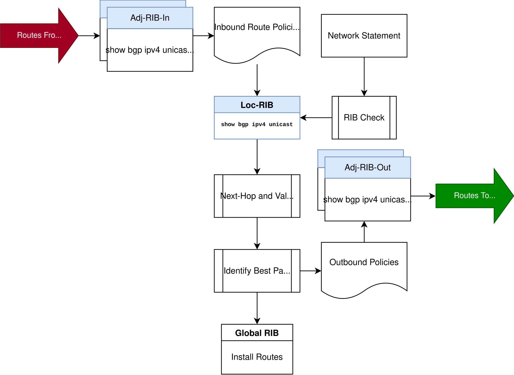
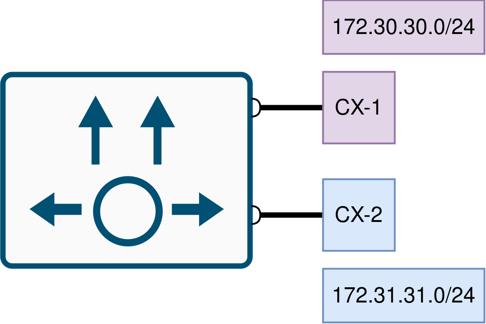
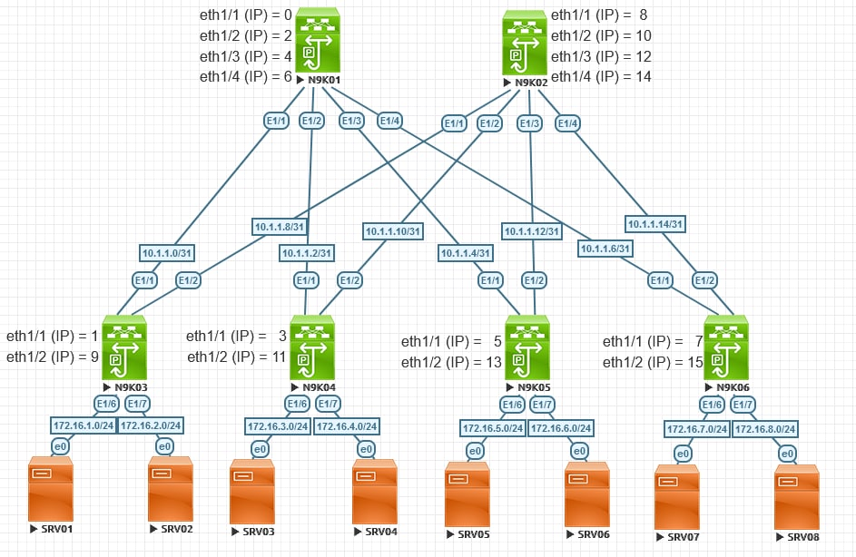
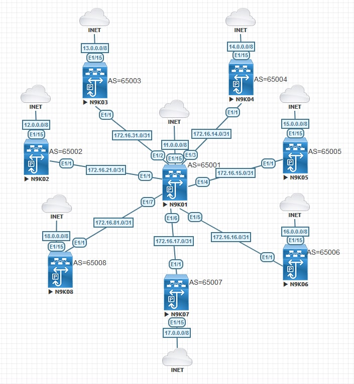

Border Gateway Protocol (BGP)
BGP Overview
Border-Gateway Protocol (BGP) is an extremely scalable routing protocol which gives you a lot of control to choose the best route. It is a path-vector, which unlike OSPF where routers individually run SPF algorithm on their Link-State Database, it advertises the routes to the network.
BGP connects two autonomous systems (AS) to teach other. There is two different formats with AS Numbers (ASN): 16-bit and 32-bit. Table below depicts the ASN assignment by IANA
| AS Number | Reason For reservation |
|---|---|
| 0 | Reserved by [RFC7607] |
| 1-64495 | Assignable by IANA for public use |
| 112 | Used by the AS112 project to sink misdirected DNS queries; see [RFC7534] |
| 23456 | AS_TRANS; reserved by [RFC6793] |
| 64496-64511 | For documentation and sample code; reserved by [RFC5398] |
| 64512-65534 | For private use; reserved by [RFC6996] |
| 65535 | Reserved by [RFC7300] |
| 65536-65551 | For documentation and sample code; reserved by [RFC5398] |
Border Gateway Protocol uses Path Attributes (PA) to make decision for choosing a route over another. BGP can advertise these PAs along with each prefix (prefix is called a Network Layer Reachability Information (NLRI)). It uses a process called the best path selection process to choose the best route between two routes.
BGP Path Attributes
Table below shows the different BGP PAs:
| Attribute Class | Scope and Examples |
|---|---|
| Well-known mandatory | Must be recognized by all routers. Must be included with every prefix advertisement. AS_PATH, origin, next hop |
| Well-known discretionary | Must be recognized by all routers. May or may not be included with a prefix advertisement. local preference, atomic aggregate |
| Optional transitive | Might or might not be recognized by a router Stay with the route advertisement from AS to AS: aggregator, community |
| Optional non-transitive | Might or might not be recognized by a router. Cannot be shared from AS to AS. MED, RR originator ID, RR cluster list |
You will later learn what these PAs are and how BGP selects the routes by these PAs. But for now, Let us start with AS_PATH which is a well-known mandatory attribute. You can think of it as a hop count, but the hop here is the entire AS. This PA performs two key functions for us:
- By default, the shortest AS_PATH (Fewest number of ASNs listed) is best path.
- Prevent loop
BGP Sessions and Messages
BGP sessions are point-to-point and unicast over TCP 179.
Here is the list of BGP messages. No Hello!
- Open
- Sends after TCP session established to request a BGP session open.
- Keepalive
- Periodically (every 60 seconds) sends after the BGP session open.
- Hold timer is 180 seconds.
- Update
- This message includes the NLRIs and PAs.
- Notification
- Sends whenever an error occurs or once hold timer expires.
- After sending notification message, BGP always closes the session.
eBGP and iBGP
- External BGP (eBGP): when two routers in two different autonomous systems exchange BGP routing information.
- Advertising router updates the AS_PATH by prepending its ASN to the AS_PATH variable.
- Receiving router checks the AS_PATH and discards the NLRI if it contains the ASN that matches its local ASN.
- TTL value with eBGP defaults to 1. If your peer is not directly connected, you must increase the TTL by
ebgp-multihop Ncommand.
- Internal BGP (iBGP): when two routers in the same autonomous systems exchange routing information.
- The purpose of iBGP is to get the routes from one edge to another edge maintaining the BGP attributes.
- BGP split-horizon is loop prevention mechanism in iBGP. It says that do not forward routes learned from an iBGP peer to another iBGP peer.
- RFC4274 says when sending a message to an iBGP peer, if the route is not locally originated, the BGP speaker SHOULD NOT modify the NEXT_HOP attribute (NEXT_HOP is a well-known mandatory attribute).
| iBGP | eBGP | |
|---|---|---|
| Update AS_PATH attribute? | No | Yes |
| Loop Prevention Mechanism | Split-horizon | AS_PATH |
| Change Next-hop? | No | Yes |
| Default TTL Value | 255 | 1 |
| Metric | 200 | 20 |
Here is basic configuration example of eBGP
N9K01# configure terminal N9K01(config)# feature bgp N9K01(config)# router bgp 65000 N9K01(config-router)# neighbor 10.1.1.1 remote-as 65001
Here is an example of how we can change the TTL with eBGP from default 1 to 2. Meaning that our peer is 2 hops away.
N9K01# configure terminal N9K01(config)#router bgp 65000 N9K01(config-router)# neighbor 10.1.1.1 N9K01(config-router-neighbor)# ebgp-multihop 2
Here is a sample configuration of iBGP
N9K01# configure terminal N9K01(config)# feature bgp N9K01(config)# router bgp 65000 N9K01(config-router)# neighbor 10.1.1.1 remote-as 65000
Here is how we can change the Next-hop attribute on an iBGP edge router:
N9K01# configure terminal N9K01(config)# router bgp 65000 N9K01(config-router-neighbor)# address-family ipv4 unicast N9K01(config-router-neighbor-af)# next-hop-self
Address Families
BGP originally was intended to advertise IPv4 prefixes. Later, with RFC 2858 Multi-Protocol BGP (MP-BGP) came to the mix. Each address-family maintains a separate database and configuration for each protocol.
Address Family Identifier (AFI) identifies the supported address types. We also have Subsequent Address Family Identifier (SAFI) which provides further information (such as unicast, multicast). Here are some AFI and SAFI codes:
- IPv4 unicast: AFI: 1, SAFI: 1
- IPv6 unicast: AFI: 2, SAFI: 1
- BGP EVPN: AFI: 25 (L2VPN), SAFI 70
Because every address family maintain a separate RIBs, it allows for a routing policy in one address family to be different from a routing policy in a different address family. Some of those routing policies include: allowas-in, as-override, default-originate, filter-list, next-hop-self, route-map, route-reflector-client, send-community, and prefix-list.
N9K01# configure terminal N9K01(config)# router bgp 65000 N9K01(config-router)# neighbor 10.1.1.1 N9K01(config-router-neighbor)# address-family ipv4 unicast N9K01(config-router-neighbor-af)# ? advertise Advertise to peer advertise-map Specify route-map for conditional advertisement advertisement-interval Minimum interval between sending BGP routing updates allowas-in Accept as-path with my AS present in it as-override Override matching AS-number while sending update capability Advertise capability to the peer default Inherit values from a peer template default-originate Originate a default toward this peer disable-peer-as-check Disable checking of peer AS-number while advertising filter-list Apply AS-PATH filter-list inherit Inherit a template maximum-prefix Maximum number of prefixes from this neighbor next-hop-self Set our address as nexthop (non-reflected) next-hop-third-party Compute a third-party nexthop if possible prefix-list Apply prefix-list route-map Apply route-map to neighbor route-reflector-client Configure a neighbor as Route reflector client send-community Send Community attribute to this neighbor soft-reconfiguration Soft reconfiguration soo Specify Site-of-origin extcommunity suppress-inactive Advertise only active routes to peer unsuppress-map Route-map to selectively unsuppress suppressed routes weight Set default weight for routes from this neighbor
Loop Prevention in iBGP
Do you remember split-horizon rule which is the loop prevention mechanism in iBGP? Yes, I do. It says that do not forward routes learned from an iBGP peer to another iBGP peer. As a result, when we have two edge nodes (R1 and R3) plus one core node (R2), then the problem appears. R1 can get the routes from outside and gives it to R2 in the core, but R2 cannot give those routes to R3. Here are the solutions we could do:
- Redistribute on R1 to IGP: This one clears all BGP attributes because the IGP does not have the same packet format as BGP.
- Because BGP is TCP-based, we can also directly establish a neighborship between R1 and R3. So we have kept our neihgborship between R1 and R2, then we established another one between R1 and R3. If required for the other direction we also need to establish another session between R2 and R3. The end result would be a full-mesh neighborship topology which we might want to avoid due to scalability issue.
- Route Reflector (RR): Some routers are configured as RR servers; these servers are allowed to learn iBGP routes from their clients and then advertise them to other iBGP peers.
- BGP Confederation: We can break a large AS into some sub ASs and go from there depending on how many BGP edge we would be having.
This breaks the split-horizon rule which in turn causes loop. But RR introduces two new attributes for loop prevention.
BGP Route Reflector (RR)
Route reflectors (RR) removes the need for a full mesh of iBGP peers. RR tells the clients that your next-hop is the other client (not RR).
- Routes learnt from RR client can be given to anyone (even not RR’s client)
- Restriction is non-client to non-client which cannot exchange their routes.
We also said that RR servers are allowed to learn iBGP routes from their clients and then advertise them to other iBGP peers - which breaks the split-horizon rule. That is why RR introduces two new attributes (optional non-transitive) for loop prevention. I am going to introduce those PAs within our R1-R2 (RR)-R3 example.
- ORIGINATOR_ID: R1 learns the route from eBGP peer, advertises it to RR. RR sets ORIGINATOR_ID to R1 RID (who brought the prefix to this AS). RR then advertises it to R3 because R3 is client of RR. R3 may advertise that route to R1, then R1 discards it because it sees its RID in the advertisement. (Prevents intra-cluster loops)
- CLUSTER_LIST: RR adds its cluster-id to the cluster list. If a router receives an NLRI with its cluster-id in the cluster list attribute, it discards the NLRI (Prevents inter-cluster loops).
- What is a cluster? An RR with some clients is a cluster. For redundancy, we might be having two RRs - each RR with different (or same) clients. Each RR with its clients is a cluster.

N9K01# configure terminal N9K01(config)# router bgp 65000 N9K01(config-router)# neighbor 10.1.1.1 N9K01(config-router-neighbor)# address-family ipv4 unicast N9K01(config-router-neighbor-af)# route-reflector-client
Inject Routes into BGP
We can inject routes using network command, redistribution, summarization, or default origination.
- Using
networkcommand. - Using
redistributecommand. - By injecting the default route using
default-information originatecommand.
Using network command
In IGPs when we use network command, we enabled that routing protocol on the matching interfaces with the network command. But in BGP when we use network command, the router looks in its routing table and if the exact equivalent prefix/length exists, puts that into the local BGP table.
N9K01# configure terminal N9K01(config)# router bgp 65500 N9K01(config-router)# address-family ipv4 unicast N9K01(config-router)# network 172.16.0.0 N9K01(config-router)# network 10.90.50.0 mask 255.255.255.0
- Connected Network: In Loc-RIB (
show bgp ipv4 unicast), you will see the next-hop attribute is set to 0.0.0.0, origin code asi(IGP) and weight as 32,768. - Static Route or Routing Protocol: The next-hop attribute is set to the next-hop IP address, the origin attribute is set to i (IGP), the weight is set to 32,768; and the MED is set to the IGP metric.
Using redistribute command
It is not recommended and in most cases the network statement is preferable.
N9K01# configure terminal N9K01(config)# route-map CONNECTED-TO-BGP N9K01(config-route-map)# match interface loopback0 , loopback1, loopback2 N9K01(config-route-map)# exit N9K01(config)# router bgp 65000 N9K01(config-router)# address-family ipv4 unicast N9K01(config-router-af)# redistribute direct route-map CONNECTED-TO-BGP
In Loc-RIB (show bgp ipv4 unicast) you will see origin code as ?.
Using default-information originate
If we wanted to advertise a default route to a particular neighbor, you could also use default originate command under a particular neighbor
N9K01# configure terminal N9K01(config)# router bgp 65001 N9K01(config-router)# neighbor 172.16.81.1 N9K01(config-router-neighbor)# address-family ipv4 unicast N9K01(config-router-neighbor-af)# default-originate
Should you need to advertise a default route to all your neighbors, you can use default-information originate under the global address-family router bgp subcommand.+
N9K01# configure terminal N9K01(config)# router bgp 65001 N9K01(config-router)# address-family ipv4 unicast N9K01(config-router-af)# default-information originate
BGP Routing Information Base
BGP RIB consists of 3 parts stores known prefixes:
- Adj-RIBs-In: stores routes learned from incoming UPDATE message.
- Loc-RIB: stores prefixes from Adj-RIB-in after applying inbound policy and locally injected routes.
- Adj-RIBs-Out: takes the prefixes from the Loc-RIB and stores advertising routes to the peer via UPDATE message.

Route Refresh, Soft Reconfiguration, and session reset
Any time you change a policy, you can send a route refresh message to a peer and request them to resend the prefixes. Route refresh capability is negotiated during the session establishment. Both peers must support this capability. You can check if the your neighbor support this capability by using show ip bgp neighbor ip-address | i refresh. If your peer supports Route Refresh capability the command clear ipbgp{* | as-number | ip-address | peer-group-name } in requests the peers to send the prefixes. (You have the option to choose between in, out, or both). In summary route refresh eliminates the need for storing the incoming prefixes as well as the need to rest the entire session.
If route refresh is not supported, we’d rather use soft reconfiguration as opposed to the session reset. With Soft Reconfiguration enabled, you will have one Adj-RIB-In per neighbor. Note that if you enable soft reconfiguration, BGP does not send route refresh update anymore to its peer.
NX-OS BGP decision process to choose competing routes
NX-OS makes decision to chose amongst multiple paths to the same destination by the following attributes:
- Is NEXT_HOP (Well-known Mandatory) in the routing table?
- No, reject the process for that route.
- Yes, continue the process.
- Highest NX-OS weight
- Weight is a Cisco-proprietary attributes which controls outbound traffic leaving the AS.
- Locally Significant: Not exchanged. It is not in BGP updates.
- The higher the value (0-65535), the better the route:
- Directly connected default to 32768
- Any other route defaults to 0
- Highest Local Preference (Well-known discretionary)
- This PA is between iBGP peers and cannot leave the AS. (except using communities)
- Controls outbound traffic leaving the AS.
- All iBGP routers choose the same exit point from their AS for a particular NLRI.
- Locally injected? Aggregates? Received by BGP peer?
- Preference is in the following order.
- Locally-advertised routes
- Locally-aggregated routes
- Learnt from another BGP
- Preference is in the following order.
- Shortest AS_PATH (Well-known mandatory)
- Used to influence inbound or outbound traffic.
- Origin
- Every BGP NLRI must have an ORIGIN attribute.
- Meant to help with transition from EGP to BGP (No practical use now)
- Lowest Multi-Exit Discriminator (MED) (Optional Non-transitive)
- Controls inbound traffic.
- If you are dual-homed with one ISP, you can give your MED to directly connected eBGP neighbor.
- Cannot influence incoming traffic originated in distant ASs.
- In case of multiple paths from different ASs, you can use AS_PATH PA.
- Neighbor Type:
- Prefers eBGP routes over iBGP routes
- The lowest IGP metric for reaching the NEXT_HOP:
- Oldest (longest-known) eBGP route
- Lowest neighbor BGP RID
- Shortest CLUSTER_LIST in route reflector topologies
- Lowest iBGP neighbor IP address
BGP Route Filtering
With Route filtering we can selectively identifying routes that are advertised or received from neighbor routers. Here are the methods we can do route filtering with BGP:
- distribute-list (Not supported by NX-OS)
- with Extended ACLs
- on a neighbor-by-neighbor basis
- Very powerful
neighbor A.B.C.D distribute-list ABC in/out- permit ip 10.0.0.0 0.0.0.0 255.255.0.0 0.0.0.0
- First portion: network portion
- Second portion: network mask
- Permits only the 10.0.0.0/16 network
- permit ip 172.16.0.0 0.0.255.255 255.255.255.128 0.0.0.127
- Network Portion: 172.16.0.0
- Mask Portion: 255.255.255.1xxxxxxx
- Permits any 172.16.x.x network with a /25 to /32 prefix length
- with Extended ACLs
- prefix-list
- on a neighbor-by-neighbor basis
- as-path access-list
- on a neighbor-by-neighbor basis
ip as-path access-list n deny/permit regexp- Then, we can reference it in a filter-list or a route-map
- on a neighbor-by-neighbor basis
prefix-list
Here is an example of prefix-list which is applied in BGP by prefix-list command:
N9K01# configure terminal N9K01(config)# ip prefix-list FILTER01 seq 5 deny 172.16.3.0/24 N9K01(config)# ip prefix-list FILTER01 seq 10 permit 0.0.0.0/0 le 32 N9K01(config)# router bgp 65000 N9K01(config-router)# neighbor 10.1.1.0 N9K01(config-router-neighbor)# address-family ipv4 unicast N9K01(config-router-neighbor-af)# prefix-list FILTER01 in
Here is an example of prefix-list which is applied in BGP using route-map command:
N9K01# configure terminal N9K01(config)# ip prefix-list FILTER02 seq 5 deny 172.16.8.0/24 N9K01(config)# ip prefix-list FILTER02 seq 10 permit 0.0.0.0/0 le 32 N9K01(config)# route-map FILTER02 permit 10 N9K01(config)# ip prefix-list FILTER02 N9K01(config)# router bgp 65000 N9K01(config-router)# neighbor 10.1.1.0 N9K01(config-router-neighbor)# address-family ipv4 unicast N9K01(config-router-neighbor-af)# route-map FILTER02 in
as-path access-list
Sometime we do not need to identify whole routes from a specific AS number to decide what to do with. We can simply use Regular Expressions (regex) to parse through the AS Path list.
Here are some examples:
ip as-path access-list 1 deny .*
- Match NLRI with any non-empty AS_PATH
- Commonly used “AS_PATH Wild Card” (permit all or deny all statement)
ip as-path access-list 2 deny ^65001_
- Match any NLRI received directly from AS 65001
- [65001, 145, 1160]=MATCH
- [65001]=MATCH
- [145, 65001]=NO MATCH
ip as-path access-list 3 permit _65001$
- Match any NLRI originated from AS 65001
- [65001, 145, 1160]=NO MATCH
- [65001]=MATCH
- [145, 65001]=MATCH
ip as-path access-list 4 deny ^65001$
- Match any NLRI originated from AS 65001 that has not passed through any other AS
- [65001, 145, 1160]=NO MATCH
- [65001]=MATCH
- [145, 65001]=NO MATCH
ip as-path access-list 60 deny _65001_
- Match any NLRI that include 65001 no matter where the occurrence is
- Application: Filters the traffic that originated or passed through AS 65001
- [65001]= ONLY MATCH
ip as-path access-list 70 permit ^$
- Match any NLRI with an empty AS_PATH: NLRI native to the local AS
- []= ONLY MATCH
N9K01(config)# feature bgp N9K01(config)# ip as-path access-list ALLOW_65001 seq 10 permit _65001_ N9K01(config)# route-map ALLOW_65001 permit 10 N9K01(config-route-map)# match as ALLOW_65001 N9K01(config)# router bgp 65000 N9K01(config-router)# neighbor 172.16.1.1 remote-as 65000 N9K01(config-router-neighbor)# address-family ipv4 unicast N9K01(config-router-neighbor-af)# route-map ALLOW_65001 in
BGP Route Aggregation
Aggregation is to BGP as summarization is to IGPs. With route summarization, we advertise one route and suppress all other routes which fall under the summary address.
One way to aggregate our routes is to manually summary our routes using a static route and sending it no the blackhole, then advertising that summary route to BGP. This is my preferred way because of its simplicity. However, there is another fancy way using aggregate-address which I describe here.
N9K01# configure terminal N9K01(config)# router bgp 65000 N9K01(config-router)# address-family ipv4 unicast N9K01(config-router-af)# aggregate-address 11.0.0.0 252.0.0.0
With aggregate-address in BGP, we advertise the aggregated address along with the specific prefixes (does not suppress the specific addresses!!!). Should you required advertising summary route only, you can add keyword summary-only in the end of aggregate-address statement.
N9K01# configure terminal N9K01(config)# router bgp 65000 N9K01(config-router)# address-family ipv4 unicast N9K01(config-router-af)# aggregate-address 11.0.0.0 252.0.0.0 summary-only
- When a BGP router summarizes a route, it does not advertise the PAs from before the aggregation.
- If you want to keep the BGP path information history, you can use the
as-setkeyword with theaggregate-addresscommand.
N9K01# configure terminal N9K01(config)# router bgp 65000 N9K01(config-router)# address-family ipv4 unicast N9K01(config-router-af)# aggregate-address 11.0.0.0 252.0.0.0 summary-only as-set
Manage large configuration with BGP
As the BGP configuration scales up, we need to organize our configuration. To manage the BGP configuration, we have Peer Groups tool as well as Peer Session and Policy Templates. We will discuss the latter.
Peer Templates
Peer Session Template: defines any parameter relevant to the BGP session such as remote-as, session timers, TTL (ebgp-multihop). Without peer session, we usually configure these commands directly under neighbor peer_id command.
Peer Policy Templates: determines any parameters dependent to address-family such as those discussed in Address Families section of this text. Without peer policy, we configure them under the address-families themselves.
Peer Template: can optionally inherit the peer-session and peer-policy templates.
N9K01# configure terminal N9K01(config)# router bgp 65001 N9K01(config-router)# template peer-session PS_TOP N9K01(config-router-stmp)# timers 15 45 N9K01(config-router-stmp)# exit N9K01(config-router)# template peer-session PS_iBGP N9K01(config-router-stmp)# inherit peer-session PS_TOP N9K01(config-router-stmp)# password SMENODEPASS N9K01(config-router-stmp)# remote-as 65001 N9K01(config-router-stmp)# exit N9K01(config-router)# template peer-session PS_BELL N9K01(config-router-stmp)# inherit peer-session PS_TOP N9K01(config-router-stmp)# password SMENODEPASS N9K01(config-router-stmp)# remote-as 577 N9K01(config-router-stmp)# ebgp-multihop 2 N9K01(config-router-stmp)# exit N9K01(config-router)# template peer-policy PP_iBGP N9K01(config-router-ptmp)# send-community both N9K01(config-router-ptmp)# soft-reconfiguration inbound always N9K01(config-router-ptmp)# next-hop-self N9K01(config-router-ptmp)# exit N9K01(config-router)# template peer-policy PP_eBGP N9K01(config-router-ptmp)# send-community both N9K01(config-router-ptmp)# soft-reconfiguration inbound always N9K01(config-router-ptmp)# exit N9K01(config-router)# neighbor 172.16.31.1 N9K01(config-router-neighbor)# inherit peer-session PS_iBGP N9K01(config-router-neighbor)# address-family ipv4 unicast N9K01(config-router-neighbor-af)# inherit peer-policy PP_iBGP N9K01(config-router)# neighbor 192.190.150.1 N9K01(config-router-neighbor)# inherit peer-session PS_BELL N9K01(config-router-neighbor)# address-family ipv4 unicast N9K01(config-router-neighbor-af)# inherit peer-policy PP_eBGP
MP-BGP and IPv6 Advertisement
Previously we spoke about address-families with BGP. BGP initially came to advertise 32-bit IPv4 routes. Then, people with RFC-4760 introduced Multiprotocol Extensions for BGP. Now, you can advertise whatever you want with different length by using different address-families. Let us look at an example of advertising IPv6 routes over an IPv6 BGP session:
switch(config-router)# router bgp 65000 switch(config-router)# router-id 10.91.255.252 ! Let's advertise an IPv6 NLRI switch(config-router)# address-family ipv6 unicast switch(config-router-af)# network 2001:1:2:2::2/128 ! Let's establish the neighborship and activate IPv6 capability switch(config-router-af)# neighbor 2001:1:2:12::1 switch(config-router-neighbor)# remote-as 65000 switch(config-router-neighbor)# address-family ipv6 unicast switch(config-router-neighbor-af)# exit
Inter-VRF Route Leaking on NX-OS With BGP
BGP - with an extended community attribute which is called Route-Target (RT) - enables a router which have different VRFs to control importing and exporting the routes to and from a VRF/MP-BGP. Every VRF is associated with one or more Route Target(s) attribute. RT is a 64-bit long value which is in the format of 32-bit:32-bit number. Commonly the first 32-bit is the BGP ASN. For example, these are valid RTs: 65001:1, 1:1
- Export RT: What routes should go from VRF to MP-BGP
- Import RT: What routes should go from MP-BGP to VRF

N9K01(config)# feature bgp N9K01(config)# vrf context CX-1 N9K01(config-vrf)# address-family ipv4 unicast N9K01(config-vrf-af-ipv4)# route-target import 65001:1 N9K01(config-vrf-af-ipv4)# route-target import 65001:2 N9K01(config-vrf-af-ipv4)# route-target export 65001:1 N9K01(config-vrf-af-ipv4)# exit N9K01(config-vrf)# vrf context CX-2 N9K01(config-vrf)# address-family ipv4 unicast N9K01(config-vrf-af-ipv4)# route-target import 65001:1 N9K01(config-vrf-af-ipv4)# route-target import 65001:2 N9K01(config-vrf-af-ipv4)# route-target export 65001:2 N9K01(config-vrf-af-ipv4)# exit N9K01(config-vrf)# interface loopback 1 N9K01(config-if)# vrf member CX-1 N9K01(config-if)# ip add 172.30.30.1/24 N9K01(config-if)# interface loopback 2 N9K01(config-if)# vrf member CX-2 N9K01(config-if)# ip add 172.31.31.1/24 N9K01(config)# router bgp 65001 N9K01(config-router)# vrf CX-1 N9K01(config-router-vrf)# address-family ipv4 unicast N9K01(config-router-vrf-af)# network 172.30.30.0/24 N9K01(config-router-vrf-af)# exit N9K01(config-router)# vrf CX-2 N9K01(config-router-vrf)# address-family ipv4 unicast N9K01(config-router-vrf-af)# network 172.31.31.0/24
Workshop 1: Leaf-and-Spine with iBGP
For the purpose of this workshop we are going to consider the following leaf-and-spine topology. No stub area is designed in this workshop.
Configuration
Here is a sample lab with BGP. Note that, OSPF is configured as IGP for transport.

Configuration
N9K01:
configure terminal
feature bgp
feature ospf
interface Ethernet1/1
no switchport
ip address 10.1.1.0/31
no shutdown
interface Ethernet1/2
no switchport
ip address 10.1.1.2/31
no shutdown
interface Ethernet1/3
no switchport
ip address 10.1.1.4/31
no shutdown
interface Ethernet1/4
no switchport
ip address 10.1.1.6/31
no shutdown
router ospf 1
router-id 1.1.1.1
interface ethernet 1/1-4
ip router ospf 1 area 0
ip ospf network point-to-point
exit
router bgp 65000
log-neighbor-changes
address-family ipv4 unicast
exit
neighbor 10.1.1.0/27
remote-as 65000
password SMENODEPASS
address-family ipv4 unicast
route-reflector-client
exit
N9K02
configure terminal
feature bgp
feature ospf
interface Ethernet1/1
no switchport
ip address 10.1.1.8/31
no shutdown
interface Ethernet1/2
no switchport
ip address 10.1.1.10/31
no shutdown
interface Ethernet1/3
no switchport
ip address 10.1.1.12/31
no shutdown
interface Ethernet1/4
no switchport
ip address 10.1.1.14/31
router ospf 1
router-id 2.2.2.2
interface ethernet 1/1-4
ip router ospf 1 area 0
ip ospf network point-to-point
exit
router bgp 65000
log-neighbor-changes
address-family ipv4 unicast
exit
neighbor 10.1.1.0/27
remote-as 65000
password SMENODEPASS
address-family ipv4 unicast
route-reflector-client
exit
N9K03
configure terminal
feature bgp
feature ospf
interface Ethernet1/1
no switchport
ip address 10.1.1.1/31
no shutdown
interface Ethernet1/2
no switchport
ip address 10.1.1.9/31
no shutdown
interface Ethernet1/6
no switchport
ip address 172.16.1.1/24
no shutdown
interface Ethernet1/7
no switchport
ip address 172.16.2.1/24
no shutdown
router ospf 1
router-id 3.3.3.3
interface ethernet 1/1-2
ip router ospf 1 area 0
ip ospf network point-to-point
exit
router bgp 65000
log-neighbor-changes
address-family ipv4 unicast
network 172.16.1.0 mask 255.255.255.0
network 172.16.2.0 mask 255.255.255.0
neighbor 10.1.1.0
remote-as 65000
password SMENODEPASS
address-family ipv4 unicast
exit
neighbor 10.1.1.8
remote-as 65000
password SMENODEPASS
address-family ipv4 unicast
N9K04
configure terminal
feature bgp
feature ospf
interface Ethernet1/1
no switchport
ip address 10.1.1.3/31
no shutdown
interface Ethernet1/2
no switchport
ip address 10.1.1.11/31
no shutdown
interface Ethernet1/6
no switchport
ip address 172.16.3.1/24
no shutdown
interface Ethernet1/7
no switchport
ip address 172.16.4.1/24
no shutdown
router ospf 1
router-id 4.4.4.4
interface ethernet 1/1-2
ip router ospf 1 area 0
ip ospf network point-to-point
exit
router bgp 65000
log-neighbor-changes
address-family ipv4 unicast
network 172.16.3.0 mask 255.255.255.0
network 172.16.4.0 mask 255.255.255.0
neighbor 10.1.1.2
remote-as 65000
password SMENODEPASS
address-family ipv4 unicast
exit
neighbor 10.1.1.10
remote-as 65000
password SMENODEPASS
address-family ipv4 unicast
N9K05
configure terminal
feature bgp
feature ospf
interface Ethernet1/1
no switchport
ip address 10.1.1.5/31
no shutdown
interface Ethernet1/2
no switchport
ip address 10.1.1.13/31
no shutdown
interface Ethernet1/6
no switchport
ip address 172.16.5.1/24
no shutdown
interface Ethernet1/7
no switchport
ip address 172.16.6.1/24
no shutdown
router ospf 1
router-id 5.5.5.5
interface ethernet 1/1-2
ip router ospf 1 area 0
ip ospf network point-to-point
exit
router bgp 65000
log-neighbor-changes
address-family ipv4 unicast
network 172.16.5.0 mask 255.255.255.0
network 172.16.6.0 mask 255.255.255.0
neighbor 10.1.1.4
remote-as 65000
password SMENODEPASS
address-family ipv4 unicast
exit
neighbor 10.1.1.12
remote-as 65000
password SMENODEPASS
address-family ipv4 unicast
N9K06
configure terminal
feature bgp
feature ospf
interface Ethernet1/1
no switchport
ip address 10.1.1.7/31
no shutdown
interface Ethernet1/2
no switchport
ip address 10.1.1.15/31
no shutdown
interface Ethernet1/6
no switchport
ip address 172.16.7.1/24
no shutdown
interface Ethernet1/7
no switchport
ip address 172.16.8.1/24
no shutdown
router ospf 1
router-id 6.6.6.6
interface ethernet 1/1-2
ip router ospf 1 area 0
ip ospf network point-to-point
exit
router bgp 65000
log-neighbor-changes
address-family ipv4 unicast
network 172.16.7.0 mask 255.255.255.0
network 172.16.8.0 mask 255.255.255.0
neighbor 10.1.1.6
remote-as 65000
password SMENODEPASS
address-family ipv4 unicast
exit
neighbor 10.1.1.14
remote-as 65000
password SMENODEPASS
address-family ipv4 unicast
Verification
To verify our BGP peers:
N9K01# show bgp ipv4 unicast summary BGP summary information for VRF default, address family IPv4 Unicast BGP router identifier 10.1.1.0, local AS number 65000 BGP table version is 13, IPv4 Unicast config peers 5, capable peers 4 8 network entries and 8 paths using 2208 bytes of memory BGP attribute entries [1/352], BGP AS path entries [0/0] BGP community entries [0/0], BGP clusterlist entries [0/0] Neighbor V AS MsgRcvd MsgSent TblVer InQ OutQ Up/Down State/ PfxRcd 10.1.1.1 4 65000 60 57 13 0 0 00:53:28 2 10.1.1.3 4 65000 59 57 13 0 0 00:52:40 2 10.1.1.5 4 65000 58 57 13 0 0 00:52:00 2 10.1.1.7 4 65000 58 57 13 0 0 00:51:15 2
To verify the BGP routes in RIB:
N9K01# show ip route bgp
IP Route Table for VRF "default"
'*' denotes best ucast next-hop
'**' denotes best mcast next-hop
'[x/y]' denotes [preference/metric]
'%<string>' in via output denotes VRF <string>
172.16.1.0/24, ubest/mbest: 1/0
*via 10.1.1.1, [200/0], 00:53:51, bgp-65000, internal, tag 65000
172.16.2.0/24, ubest/mbest: 1/0
*via 10.1.1.1, [200/0], 00:53:51, bgp-65000, internal, tag 65000
172.16.3.0/24, ubest/mbest: 1/0
*via 10.1.1.3, [200/0], 00:53:04, bgp-65000, internal, tag 65000
172.16.4.0/24, ubest/mbest: 1/0
*via 10.1.1.3, [200/0], 00:53:04, bgp-65000, internal, tag 65000
172.16.5.0/24, ubest/mbest: 1/0
*via 10.1.1.5, [200/0], 00:52:22, bgp-65000, internal, tag 65000
172.16.6.0/24, ubest/mbest: 1/0
*via 10.1.1.5, [200/0], 00:52:22, bgp-65000, internal, tag 65000
172.16.7.0/24, ubest/mbest: 1/0
*via 10.1.1.7, [200/0], 00:51:37, bgp-65000, internal, tag 65000
172.16.8.0/24, ubest/mbest: 1/0
*via 10.1.1.7, [200/0], 00:51:37, bgp-65000, internal, tag 65000
Advertised routes to the neighbor:
N9K01# show bgp ipv4 unicast neighbors 10.1.1.1 advertised-routes Peer 10.1.1.1 routes for address family IPv4 Unicast: BGP table version is 13, Local Router ID is 10.1.1.0 Status: s-suppressed, x-deleted, S-stale, d-dampened, h-history, *-valid, >-best Path type: i-internal, e-external, c-confed, l-local, a-aggregate, r-redist, I-i njected Origin codes: i - IGP, e - EGP, ? - incomplete, | - multipath, & - backup, 2 - b est2 Network Next Hop Metric LocPrf Weight Path *>i172.16.3.0/24 10.1.1.3 100 0 i *>i172.16.4.0/24 10.1.1.3 100 0 i *>i172.16.5.0/24 10.1.1.5 100 0 i *>i172.16.6.0/24 10.1.1.5 100 0 i *>i172.16.7.0/24 10.1.1.7 100 0 i *>i172.16.8.0/24 10.1.1.7 100 0 i
Here is the received routes routes from the neighbor:
N9K01# show bgp ipv4 unicast neighbors 10.1.1.1 routes Peer 10.1.1.1 routes for address family IPv4 Unicast: BGP table version is 13, Local Router ID is 10.1.1.0 Status: s-suppressed, x-deleted, S-stale, d-dampened, h-history, *-valid, >-best Path type: i-internal, e-external, c-confed, l-local, a-aggregate, r-redist, I-i njected Origin codes: i - IGP, e - EGP, ? - incomplete, | - multipath, & - backup, 2 - b est2 Network Next Hop Metric LocPrf Weight Path *>i172.16.1.0/24 10.1.1.1 100 0 i *>i172.16.2.0/24 10.1.1.1 100 0 i
Workshop 2: Inter-VRF Routing With MP-BGP
Consider a single Nexus switch with two VRFs CX-1 and CX-2. The requirement is that these tenants to be able to communicate with each other over than 172.30.30.0/24 and 172.31.31.0/24.

conf t
vrf context CX-1
address-family ipv4 unicast
route-target import 65001:1
route-target import 65001:2
route-target export 65001:1
exit
vrf context CX-2
address-family ipv4 unicast
route-target import 65001:1
route-target import 65001:2
route-target export 65001:2
exit
interface loopback 1
vrf member CX-1
ip add 172.30.30.1/24
interface loopback 2
vrf member CX-2
ip add 172.31.31.1/24
feature bgp
router bgp 65000
vrf CX-1
address-family ipv4 unicast
network 172.30.30.0/24
vrf CX-2
address-family ipv4 unicast
network 172.31.31.0/24
exit
Verification:
N9K01# show ip route vrf CX-1
IP Route Table for VRF "CX-1"
'*' denotes best ucast next-hop
'**' denotes best mcast next-hop
'[x/y]' denotes [preference/metric]
'%<string>' in via output denotes VRF <string>
172.30.30.0/24, ubest/mbest: 1/0, attached
*via 172.30.30.1, Lo1, [0/0], 00:03:01, direct
172.30.30.1/32, ubest/mbest: 1/0, attached
*via 172.30.30.1, Lo1, [0/0], 00:03:01, local
172.31.31.0/24, ubest/mbest: 1/0, attached
*via 172.31.31.1%CX-2, Lo2, [20/0], 00:02:00, bgp-65001, external, tag 65001
N9K01# ping 172.31.31.1 vrf CX-1
PING 172.31.31.1 (172.31.31.1): 56 data bytes
64 bytes from 172.31.31.1: icmp_seq=0 ttl=255 time=0.914 ms
64 bytes from 172.31.31.1: icmp_seq=1 ttl=255 time=1.063 ms
64 bytes from 172.31.31.1: icmp_seq=2 ttl=255 time=1.066 ms
64 bytes from 172.31.31.1: icmp_seq=3 ttl=255 time=1.429 ms
64 bytes from 172.31.31.1: icmp_seq=4 ttl=255 time=1.158 ms
--- 172.31.31.1 ping statistics ---
5 packets transmitted, 5 packets received, 0.00% packet loss
round-trip min/avg/max = 0.914/1.126/1.429 ms
Workshop: eBGP Route IXP
In the workshop below, I am going configure N9K01 as a eBGP hub. The other satellites will learn the routes through that router. You will also see the peer-template configuration in action:

N9K01:
configure terminal
feature bgp
interface Ethernet1/1
no switchport
ip address 172.16.21.0/31
no shutdown
interface Ethernet1/2
no switchport
ip address 172.16.31.0/31
no shutdown
interface Ethernet1/3
no switchport
ip address 172.16.14.0/31
no shutdown
interface Ethernet1/4
no switchport
ip address 172.16.15.0/31
no shutdown
interface Ethernet1/5
no switchport
ip address 172.16.16.0/31
no shutdown
interface Ethernet1/6
no switchport
ip address 172.16.17.0/31
no shutdown
interface Ethernet1/7
no switchport
ip address 172.16.81.0/31
no shutdown
interface Ethernet1/15
no switchport
ip address 11.0.0.1/8
no shutdown
router bgp 65001
log-neighbor-changes
address-family ipv4 unicast
network 11.0.0.0 mask 255.0.0.0
exit
template peer-policy PP_TOP
soft-reconfiguration inbound always
exit
template peer-session PS_TOP
password SMENODEPASS
exit
neighbor 17.16.21.1 remote-as 65002
inherit peer-session PS_TOP
address-family ipv4 unicast
inherit peer-policy PP_TOP 1
neighbor 17.16.31.1 remote-as 65003
inherit peer-session PS_TOP
address-family ipv4 unicast
inherit peer-policy PP_TOP 1
neighbor 17.16.14.1 remote-as 65004
inherit peer-session PS_TOP
address-family ipv4 unicast
inherit peer-policy PP_TOP 1
neighbor 17.16.15.1 remote-as 65005
inherit peer-session PS_TOP
address-family ipv4 unicast
inherit peer-policy PP_TOP 1
neighbor 17.16.16.1 remote-as 65006
inherit peer-session PS_TOP
address-family ipv4 unicast
inherit peer-policy PP_TOP 1
neighbor 17.16.17.1 remote-as 65007
inherit peer-session PS_TOP
address-family ipv4 unicast
inherit peer-policy PP_TOP 1
neighbor 17.16.81.1 remote-as 65008
inherit peer-session PS_TOP
address-family ipv4 unicast
inherit peer-policy PP_TOP 1
N9K02:
configure terminal
feature bgp
interface Ethernet1/1
no switchport
ip address 172.16.21.1/31
no shutdown
interface Ethernet1/15
no switchport
ip address 12.0.0.1/8
no shutdown
router bgp 65002
log-neighbor-changes
address-family ipv4 unicast
network 12.0.0.0 mask 255.0.0.0
neighbor 172.16.21.0
password SMENODEPASS
remote-as 65001
address-family ipv4 unicast
exit
N9K03:
configure terminal
feature bgp
interface Ethernet1/1
no switchport
ip address 172.16.31.1/31
no shutdown
interface Ethernet1/15
no switchport
ip address 13.0.0.1/8
no shutdown
router bgp 65003
log-neighbor-changes
address-family ipv4 unicast
network 13.0.0.0 mask 255.0.0.0
neighbor 172.16.31.0
password SMENODEPASS
remote-as 65001
address-family ipv4 unicast
exit
N9K04:
configure terminal
feature bgp
interface Ethernet1/1
no switchport
ip address 172.16.14.1/31
no shutdown
interface Ethernet1/15
no switchport
ip address 14.0.0.1/8
no shutdown
router bgp 65004
log-neighbor-changes
address-family ipv4 unicast
network 14.0.0.0 mask 255.0.0.0
neighbor 172.16.14.0
password SMENODEPASS
remote-as 65001
address-family ipv4 unicast
exit
N9K05:
configure terminal
feature bgp
interface Ethernet1/1
no switchport
ip address 172.16.15.1/31
no shutdown
interface Ethernet1/15
no switchport
ip address 15.0.0.1/8
no shutdown
router bgp 65005
log-neighbor-changes
address-family ipv4 unicast
network 15.0.0.0 mask 255.0.0.0
neighbor 172.16.15.0
password SMENODEPASS
remote-as 65001
address-family ipv4 unicast
exit
N9K06:
configure terminal
feature bgp
interface Ethernet1/1
no switchport
ip address 172.16.16.1/31
no shutdown
interface Ethernet1/15
no switchport
ip address 16.0.0.1/8
no shutdown
router bgp 65006
log-neighbor-changes
address-family ipv4 unicast
network 16.0.0.0 mask 255.0.0.0
neighbor 172.16.16.0
password SMENODEPASS
remote-as 65001
address-family ipv4 unicast
exit
N9K07:
configure terminal
feature bgp
interface Ethernet1/1
no switchport
ip address 172.16.17.1/31
no shutdown
interface Ethernet1/15
no switchport
ip address 17.0.0.1/8
no shutdown
router bgp 65007
log-neighbor-changes
address-family ipv4 unicast
network 17.0.0.0 mask 255.0.0.0
neighbor 172.16.17.0
password SMENODEPASS
remote-as 65001
address-family ipv4 unicast
exit
N9K08:
configure terminal
feature bgp
interface Ethernet1/1
no switchport
ip address 172.16.81.1/31
no shutdown
interface Ethernet1/15
no switchport
ip address 18.0.0.1/8
no shutdown
router bgp 65008
log-neighbor-changes
address-family ipv4 unicast
network 18.0.0.0 mask 255.0.0.0
neighbor 172.16.81.0
password SMENODEPASS
remote-as 65001
address-family ipv4 unicast
exit
References
It is not necessary for CCIE Datacenter curriculum, but you can refer to this link to compare Link-State and Distance-Vector protocols.